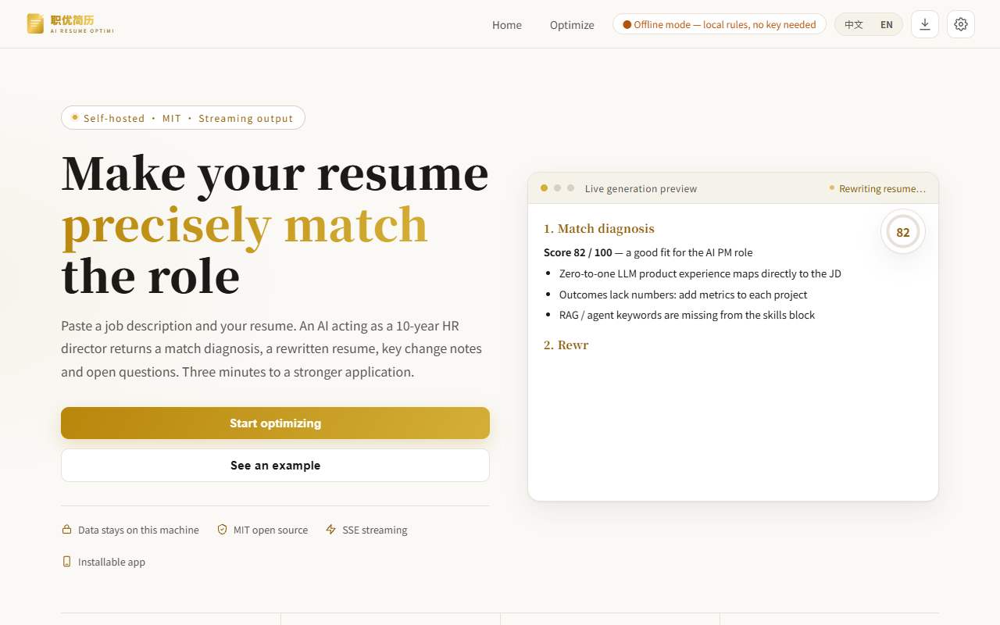
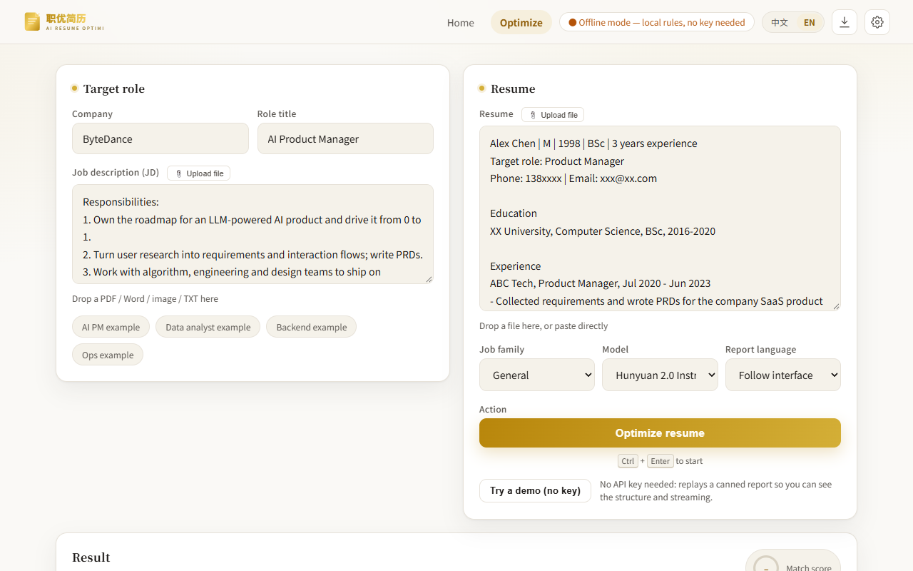
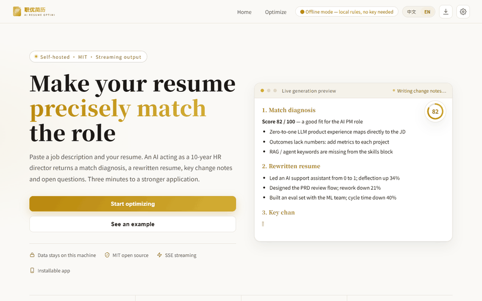
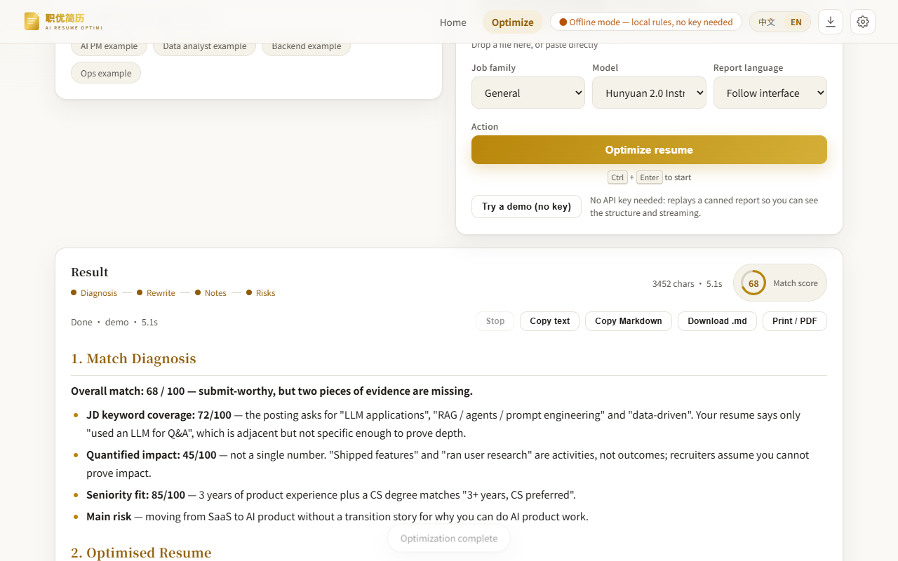
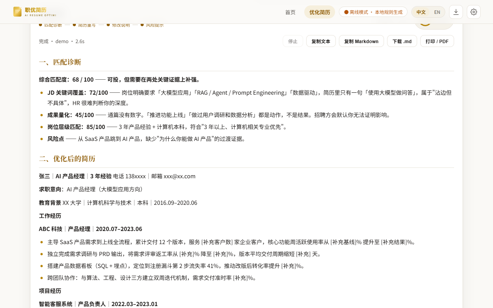

把一段 JD 和你的简历放进去，模型逐段生成"匹配诊断 → 优化后的简历 → 修改清单 → 缺口与风险"，边生成边显示。
自托管、无框架、无数据库：默认接腾讯混元，也可以指向任何兼容 chat-completions 的端点。


截图来自真实运行的界面（demo 模式）。完整流程见下方 GIF。



一个 Node 进程，前端是原生 HTML/CSS/JS，没有构建步骤，也不依赖数据库。
在 .env 里填 LLM_API_BASE 与 LLM_MODEL，协议是 chat-completions。
SSE 边生成边渲染，可随时停止、复制 Markdown 或下载成文件。
docker run --rm -p 127.0.0.1:3000:3000 --env-file .env ghcr.io/echo33550336/resume-optimization:latest